Учим браузер понимать и разговаривать
Владимир Дашукевич @life__777

Как мы общаемся с браузером?
Клавиатура
Недостатки
- Нужны руки
- Много не нужных движений
- Грязь
- Размеры
- A так же ...
Управление жестами
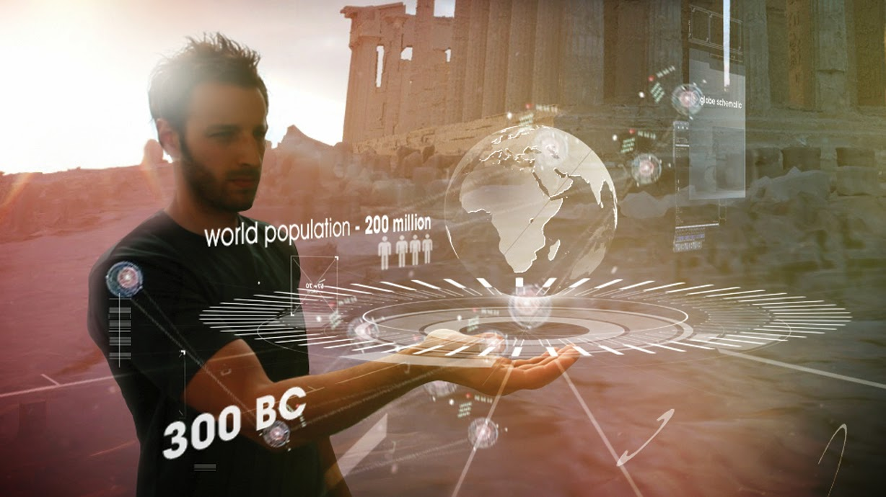Недостатки
- Нужны руки или другие части тела
- Нету API в браузере
- Нужны специальные устройства (Leap Motion)
- Ещё больше ненужных движений
Голос
Голос!
Достоинства
- Имеется API в браузере
- Не нужны руки
- Управление на расстоянии
Недостатки
- Сложность в распознавании команд
- Ошибочность
Как это работает?
Звук
Звук — физическое явление, представляющее собой распространение в виде упругих волн механических колебаний в твёрдой, жидкой или газообразной среде.
Форманты
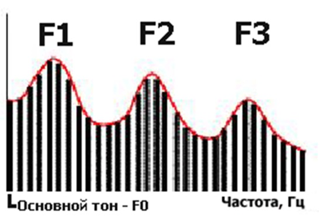Шум
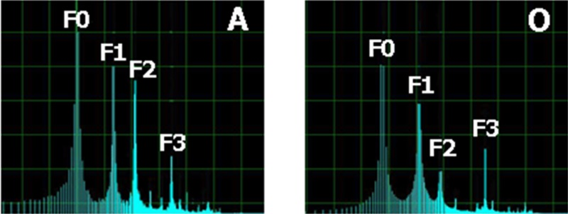
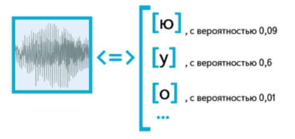
Спустя огромное количество больших формул
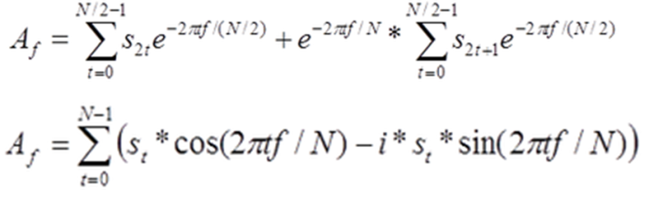Уровни распознавания речи
- Ввод и предварительная обработка сигналов
- Распознование слов и морфем
- Смысловой контроль
Что мы имеем в браузере?
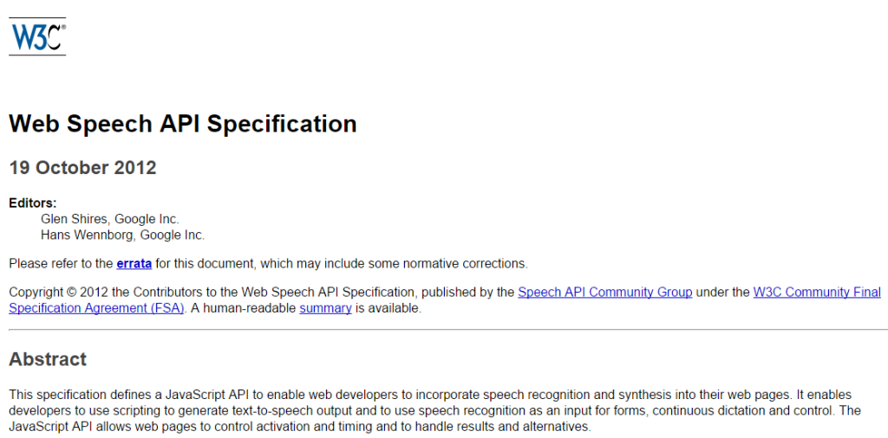
Части
- Распознавание речи
- Грамматика
- Синтез речи
Распознавание речи
Распознавание речи
var recognition = new webkitSpeechRecognition();recognition.onresult = function(event) {if (event.results.length > 0) {q.value = event.results[0][0].transcript;}}recognition.start();
Распознавание речи
var recognition = new webkitSpeechRecognition();recognition.onresult = function(event) {if (event.results.length > 0) {q.value = event.results[0][0].transcript;}}recognition.start();
Распознавание речи
var recognition = new webkitSpeechRecognition();recognition.onresult = function(event) {if (event.results.length > 0) {q.value = event.results[0][0].transcript;}}recognition.start();
Распознавание речи
var recognition = new webkitSpeechRecognition();recognition.onresult = function(event) {if (event.results.length > 0) {q.value = event.results[0][0].transcript;}}recognition.start();
Результаты
{ 0: {confidence: 0.9320464730262756,transcript: "зубная паста"}, 1: {confidence: 0.3405290540655,transcript: "зубная паста спб"},isFinal:true,length: 2 }
Результаты
{ 0: {confidence: 0.9320464730262756,transcript: "зубная паста"}, 1: {confidence: 0.3405290540655,transcript: "зубная паста спб"},isFinal:true,length: 2 }
Результаты
{ 0: {confidence: 0.9320464730262756,transcript: "зубная паста"}, 1: {confidence: 0.3405290540655,transcript: "зубная паста спб"},isFinal:true,length: 2 }
Возможности
- Непрерывное распознование речи
continuous - Промежуточные результаты
interimResults - Язык
lang - Количество альтернатив
maxAlternatives - Грамматика
grammars
Демо
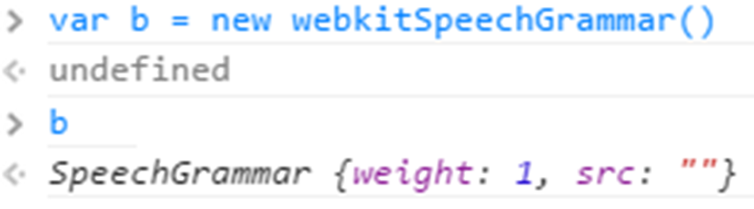
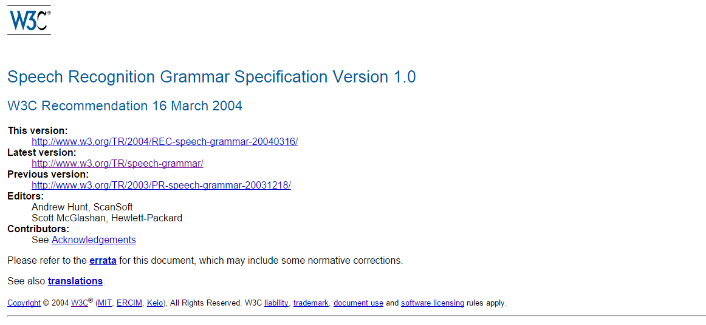
Генерация речи
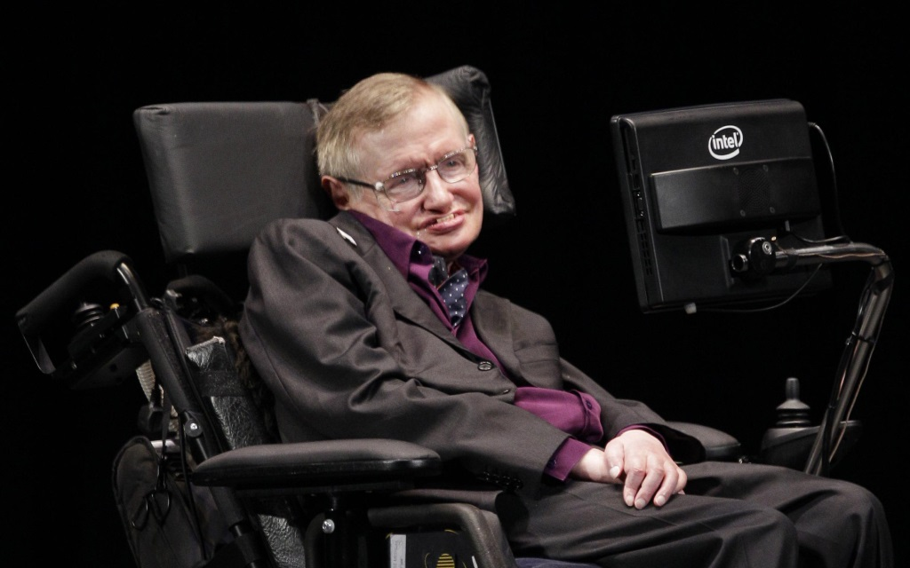Генерация речи
var u = new SpeechSynthesisUtterance();u.text = 'Привет';u.lang = 'ru-RU';speechSynthesis.speak(u);
Генерация речи
var u = new SpeechSynthesisUtterance();u.text = 'Привет';u.lang = 'ru-RU';speechSynthesis.speak(u);
Генерация речи
var u = new SpeechSynthesisUtterance();u.text = 'Привет';u.lang = 'ru-RU';speechSynthesis.speak(u);
Генерация речи
var u = new SpeechSynthesisUtterance();u.text = 'Привет';u.lang = 'ru-RU';speechSynthesis.speak(u);
Возможности
- Громкость
volume - Частота
pitch - Скорость
rate - Язык
lang - Голос
voice
Альтернативы
Где можно использовать?
| Генерация и распознование речи |  |
| Генерация речи |    |
| Не поддерживается |   |
Что нас ждет в будущем?
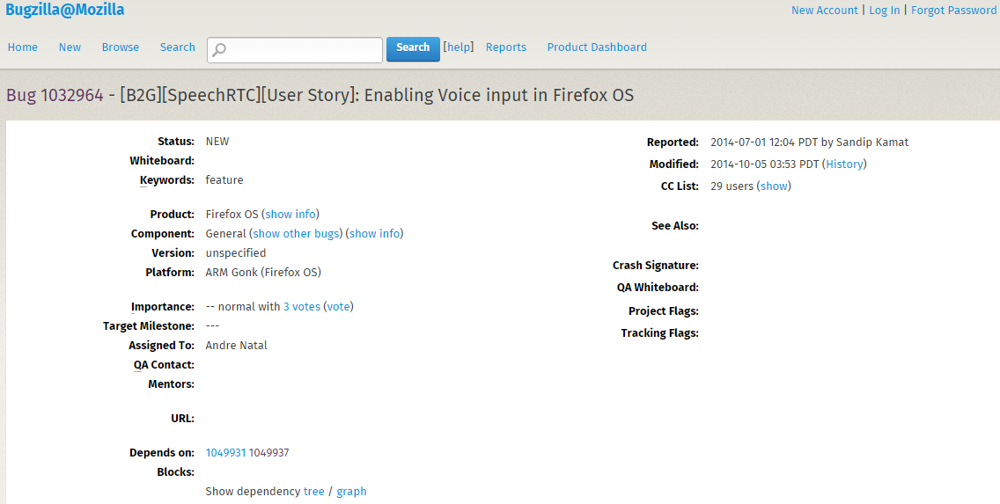

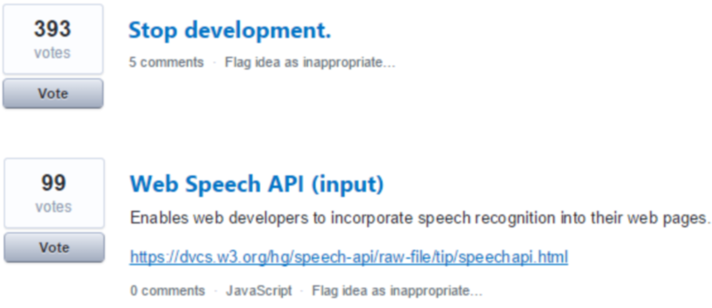

Кто виноват и что делать?
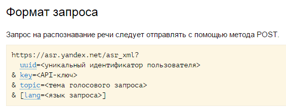
$5 за 1000 запросов
Emscripten
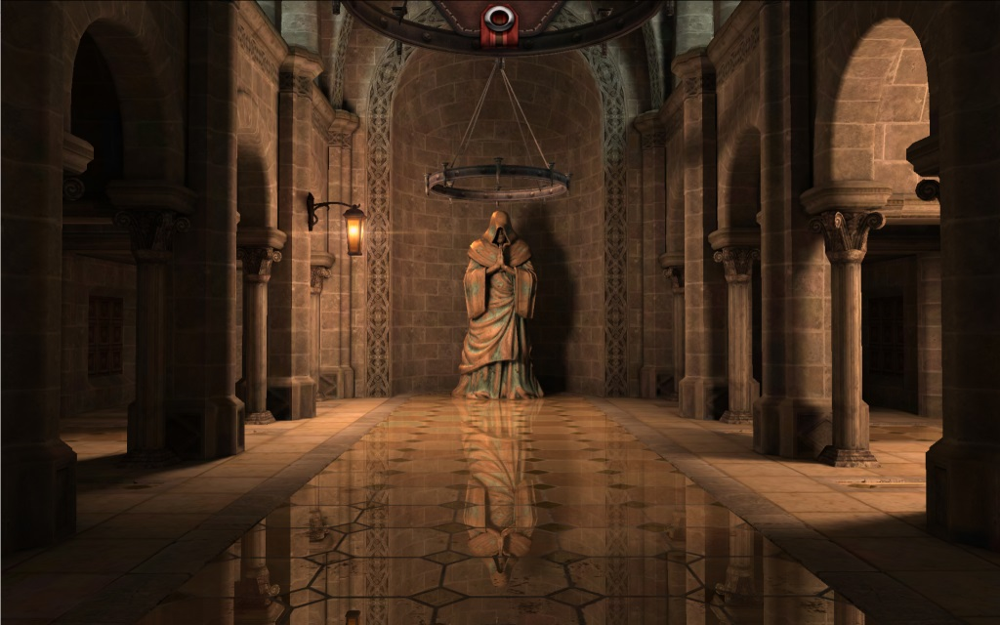
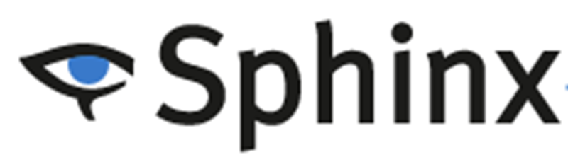
Pocketsphinx.js
- pocketsphinx.js
- recognizer.js
- audioRecorder.js
- callbackManager.js
Pocketsphinx.js
var audioContext = new AudioContext();navigator.getUserMedia({audio: true}, function(stream) {var input = audioContext.createMediaStreamSource(stream);recorder = new AudioRecorder(input);recognizer = new Module.Recognizer();recorder.consumers.push(recognizer);recorder.start();}, function(e) {});
Pocketsphinx.js
var audioContext = new AudioContext();navigator.getUserMedia({audio: true}, function(stream) {var input = audioContext.createMediaStreamSource(stream);recorder = new AudioRecorder(input);recognizer = new Module.Recognizer();recorder.consumers.push(recognizer);recorder.start();}, function(e) {});
Pocketsphinx.js
var audioContext = new AudioContext();navigator.getUserMedia({audio: true}, function(stream) {var input = audioContext.createMediaStreamSource(stream);recorder = new AudioRecorder(input);recognizer = new Module.Recognizer();recorder.consumers.push(recognizer);recorder.start();}, function(e) {});
Pocketsphinx.js
var audioContext = new AudioContext();navigator.getUserMedia({audio: true}, function(stream) {var input = audioContext.createMediaStreamSource(stream);recorder = new AudioRecorder(input);recognizer = new Module.Recognizer();recorder.consumers.push(recognizer);recorder.start();}, function(e) {});
Pocketsphinx.js
var audioContext = new AudioContext();navigator.getUserMedia({audio: true}, function(stream) {var input = audioContext.createMediaStreamSource(stream);recorder = new AudioRecorder(input);recognizer = new Module.Recognizer();recorder.consumers.push(recognizer);recorder.start();}, function(e) {});
Недостатки
- Сложность в распознавании команд
- Ошибочность
Фонемы
var recognizer = new Module.Recognizer(),words = new Module.VectorWords()words.push_back(["Привет", "PR EE V ET"]);words.push_back(["мир", "M IY R"]);recognizer.addWords(words)
Фонемы
var recognizer = new Module.Recognizer(),words = new Module.VectorWords()words.push_back(["Привет", "PR EE V ET"]);words.push_back(["мир", "M IY R"]);recognizer.addWords(words)
Грамматика
{numStates: 3, start: 0, end: 3, transitions: [{from: 0, to: 1, word: "WINDOWS"},{from: 0, to: 1, word: "LINUX"},{from: 1, to: 2, word: "IS"},{from: 2, to: 2, word: "NOT"},{from: 2, to: 3, word: "GOOD"},{from: 2, to: 3, word: "BAD"}]}
Грамматика
{numStates: 3, start: 0, end: 3, transitions: [{from: 0, to: 1, word: "WINDOWS"},{from: 0, to: 1, word: "LINUX"},{from: 1, to: 2, word: "IS"},{from: 2, to: 2, word: "NOT"},{from: 2, to: 3, word: "GOOD"},{from: 2, to: 3, word: "BAD"}]}
Грамматика
{numStates: 3, start: 0, end: 3, transitions: [{from: 0, to: 1, word: "WINDOWS"},{from: 0, to: 1, word: "LINUX"},{from: 1, to: 2, word: "IS"},{from: 2, to: 2, word: "NOT"},{from: 2, to: 3, word: "GOOD"},{from: 2, to: 3, word: "BAD"}]}
Грамматика
{numStates: 3, start: 0, end: 3, transitions: [{from: 0, to: 1, word: "WINDOWS"},{from: 0, to: 1, word: "LINUX"},{from: 1, to: 2, word: "IS"},{from: 2, to: 2, word: "NOT"},{from: 2, to: 3, word: "GOOD"},{from: 2, to: 3, word: "BAD"}]}
Pocketsphinx.js
JuliusJS
var julius = new Julius();julius.onrecognition = function(sentence) {console.log(sentence);};
Грамматика
- файл .voca - определение слов
- файл .grammar - сочетание слов
.voca
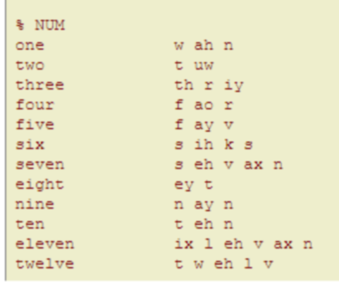.grammar
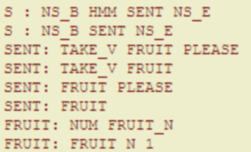
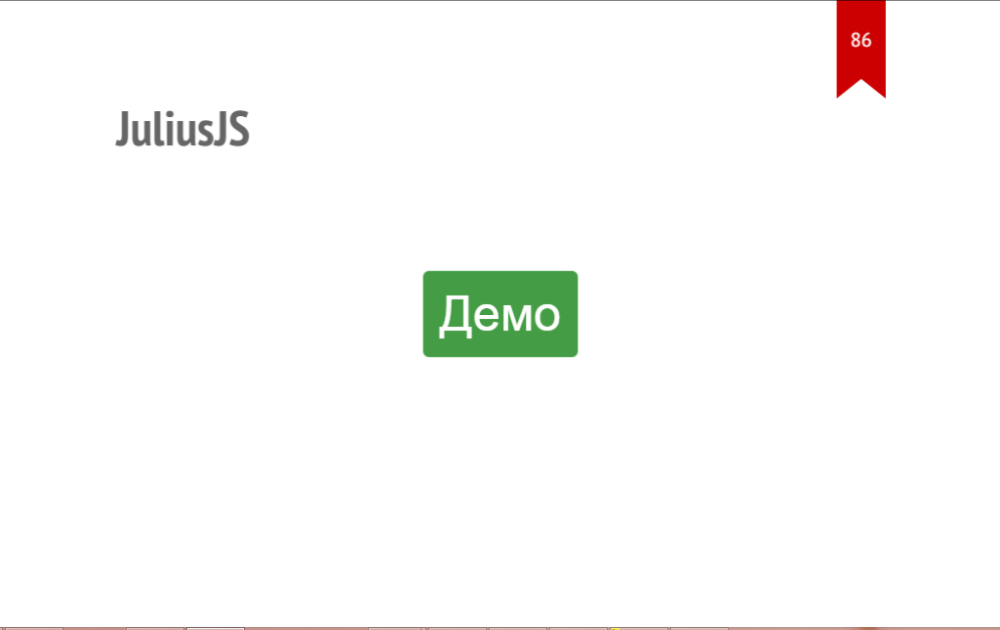
Готово!
Применение
Применение
Пользователи как Javascript
Применение
Пользователи как Javascript - однопоточные
Где нужны руки?
- За рулем
- При готовке
- За станком
- В обучении
- Для людей с ограниченными возможностями